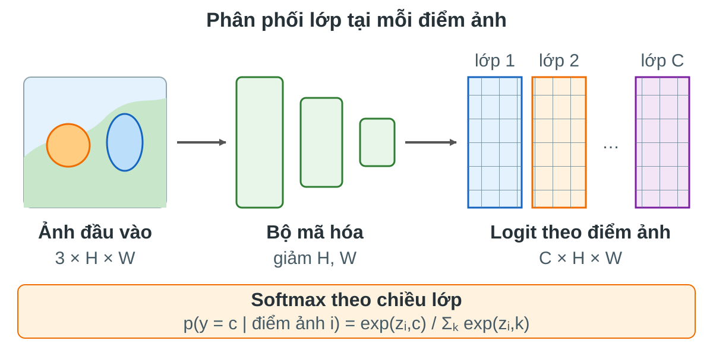
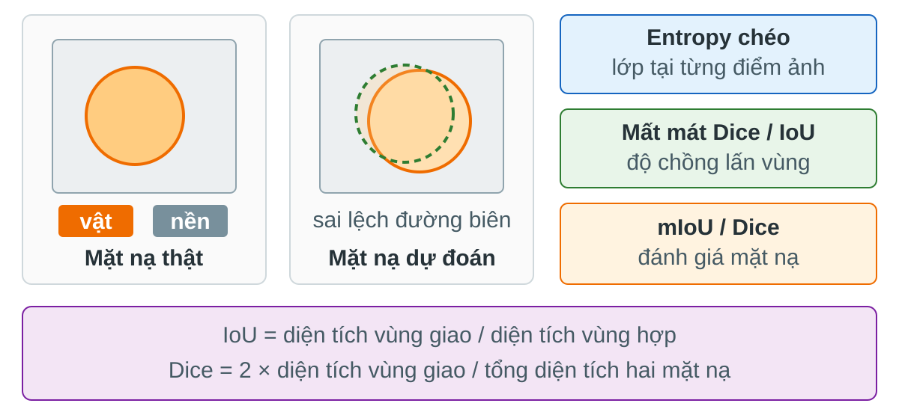

FCN · U-Net · DeepLab · U-Net + ViT · Mask R-CNN · Phân vùng toàn cảnh
Trường ĐH Công nghệ · Đại học Quốc gia Hà Nội
Đầu ra theo điểm ảnh, mất mát, độ đo, dữ liệu.
FCN, U-Net, DeepLab, U-Net + ViT.
Mask R-CNN và nhánh mặt nạ song song.
Ghép vật thể và vùng nền thành một đầu ra.
Bài này nối trực tiếp từ phát hiện đối tượng: ta giữ ý tưởng định vị, nhưng chuyển đơn vị dự đoán từ hộp sang điểm ảnh.
Hộp bao chỉ định vị thô; mặt nạ cho biết biên vật ở mức điểm ảnh.
Bài 11 đã hỏi: ảnh có những vật nào và hộp nằm ở đâu. Bài 12 hỏi chi tiết hơn: từng điểm ảnh thuộc về cái gì.
Làm thế nào biến đặc trưng ảnh thô thành một bản đồ nhãn dày đặc, vừa đúng ngữ nghĩa, vừa sắc ở biên?
Hiểu điểm logit \(C\times H\times W\), mặt nạ, nhãn bỏ qua, mất cân bằng lớp.
Nhìn được vai trò bộ mã hóa, bộ giải mã, liên kết tắt, tích chập rỗng, ASPP, RoI Align.
FCN, U-Net, DeepLab, ViT và Mask R-CNN giải quyết thiếu chi tiết theo các cách khác nhau.
Entropy chéo, Dice, IoU, mất mát tập trung, mất mát mặt nạ và chất lượng toàn cảnh.
Đầu ra theo điểm ảnh · nhãn khó · mất mát · độ đo

Mỗi vị trí ảnh có một phân phối lớp.
Tính mất mát trên logit + softmax; chưa dùng argmax vì không khả vi.
Lấy lớp xác suất cao nhất ở từng điểm ảnh để tạo mặt nạ.
Mô hình học logit; mặt nạ là đầu ra để hiển thị.
Một lớp cho mỗi điểm ảnh. Hai xe cùng lớp bị dính.
Một mặt nạ cho mỗi vật: xe #1, xe #2, người #1.
Một nhãn cuối cho mỗi điểm ảnh: vật riêng hoặc nền.
Ba kiểu đầu ra khác nhau ở đầu dự đoán và quy ước nhãn.
Phân vùng đổi đơn vị học: từ vùng ứng viên sang lưới điểm ảnh.
Tầng sâu giúp nhận đúng lớp; tầng nông giữ vị trí biên. Phân vùng tốt phải kết hợp cả hai.
Tập điểm ảnh được tính mất mát; bỏ điểm ảnh không rõ nhãn.
Xác suất mô hình gán cho lớp đúng.
Nền quá nhiều có thể áp đảo lớp nhỏ hoặc lớp hiếm.
CE là nền tảng, nhưng yếu khi vùng nhỏ hoặc lớp mất cân bằng mạnh.
Nếu 95% điểm ảnh là nền, mô hình có thể giảm mất mát bằng cách đoán nền.
Gán trọng số lớp, lấy mẫu vùng khó, dùng Dice/IoU hoặc focal loss.
Trọng số lớp buộc mô hình xem lỗi ở lớp hiếm nghiêm trọng hơn lỗi ở nền lớn.

Entropy chéo hỏi từng điểm ảnh đúng chưa; Dice/IoU hỏi vùng dự đoán chồng lên vùng thật đến đâu.
Vùng thật nhỏ vẫn tạo tín hiệu học rõ khi dự đoán chồng lên đúng vùng đó.
Dice thường đi cùng CE: CE ổn định từng điểm ảnh, Dice tối ưu vùng.
Trong ảnh y tế, Dice thường hữu ích vì vùng tổn thương có thể rất nhỏ.
Dễ cao khi nền chiếm đa số. Mô hình chỉ đoán nền vẫn có thể trông “tốt”.
Tính IoU từng lớp rồi lấy trung bình; lớp nhỏ có tiếng nói riêng.
mIoU phạt lỗi bỏ sót lớp nhỏ tốt hơn accuracy.
Tập điểm ảnh biên của mặt nạ đúng; \(\partial \hat{Y}\) là biên dự đoán.
Cho phép lệch vài pixel; biên dự đoán nằm trong vùng giãn được tính là khớp.
Boundary F1 cao khi biên dự đoán vừa bám sát biên thật, vừa không sinh quá nhiều đoạn biên thừa.
Cảnh đường phố; dùng cho ngữ nghĩa và toàn cảnh.
Bộ chuẩn phổ biến cho ảnh tự nhiên.
Mặt nạ theo đối tượng và toàn cảnh.
Vì nhãn sạch ít, mô hình phải tận dụng dữ liệu hiệu quả.
Điểm ảnh bỏ qua không góp đạo hàm; không phạt mô hình bằng nhãn không đáng tin.
Cần nói rõ điểm ảnh nào được tính mất mát và độ đo.
Cùng một bài toán: hiểu lớp ở tầm rộng nhưng vẫn vẽ đúng biên.
Toàn tích chập · điểm lớp theo vị trí · phóng to đặc trưng · liên kết tắt
Một nhãn lớp cho mỗi điểm ảnh: đường, cây, xe, người, nền.
Không tách xe #1 và xe #2. Hai vật cùng lớp có cùng màu nhãn.
Phân vùng ngữ nghĩa biến bài toán nhận dạng ảnh thành bài toán nhận dạng tại mọi vị trí trong ảnh.
Cho phép nén toàn ảnh thành một véc-tơ vì chỉ cần một nhãn.
Cần biết vị trí nào thuộc lớp nào, nên phải giữ cấu trúc không gian.
FCN ra đời từ đúng câu hỏi này: làm sao dùng lại CNN phân loại mà không phá mất bản đồ vị trí.
FCN giữ mọi bước ở dạng bản đồ đặc trưng, nên có thể dự đoán dày đặc cho ảnh kích thước bất kỳ.
Làm mất vị trí \(h,w\) và buộc ảnh đầu vào có kích thước cố định.
Dùng tích chập 1x1 để biến mỗi véc-tơ đặc trưng tại một vị trí thành điểm lớp.
Đây là bước chuyển tư duy chính: mạng không còn kết luận một lần cho cả ảnh, mà kết luận lặp lại tại mọi vị trí.
Tại mỗi vị trí, cùng một bộ trọng số hỏi: đặc trưng này giống lớp nào?
Tạo \(C\) bản đồ điểm lớp, mỗi bản đồ ứng với một lớp cần phân vùng.
Tích chập 1x1 là bộ phân loại tuyến tính được áp dụng đồng nhất trên mọi vị trí không gian.
Tầng sâu nhìn được ngữ cảnh lớn, nên phân biệt lớp tốt hơn.
Mỗi ô đặc trưng sâu đại diện cho một vùng lớn, nên biên bị thô.
Nếu chỉ dùng tầng sâu nhất, mô hình hiểu đúng lớp nhưng khó vẽ biên chính xác.
Phóng to bằng công thức có sẵn, không học từ dữ liệu.
Dùng trọng số học được để biến bản đồ thô thành bản đồ lớn hơn.
Phóng to đặc trưng là bước bắt buộc để biến điểm lớp thô thành mặt nạ cùng kích thước ảnh.
Mỗi ô đầu vào rải ảnh hưởng ra một vùng trên bản đồ đầu ra lớn hơn.
Đây là tầng học được, nên tốt hơn việc chỉ phóng to bằng công thức cố định.
Tích chập chuyển vị không “đảo ngược” CNN; nó là một tầng học cách tạo bản đồ lớn hơn.
Thiết kế đơn giản, dùng đặc trưng sâu có ngữ nghĩa mạnh.
Phóng to từ lưới quá thưa, nên mặt nạ dễ bị thô và lệch biên.
FCN-32s cho thấy CNN phân loại có thể làm phân vùng, nhưng chất lượng biên chưa đủ tốt.
Giữ cạnh và vị trí tốt, nhưng ngữ nghĩa yếu.
Hiểu lớp tốt, nhưng vị trí thô.
Tạo điểm lớp ở nhiều tầng, căn kích thước, rồi cộng lại.
Liên kết tắt của FCN là tiền thân trực tiếp của ý tưởng bộ mã hóa - bộ giải mã trong U-Net.
Mỗi lần thêm tầng nông hơn, mặt nạ có thêm thông tin vị trí.
Biên sắc hơn mà vẫn giữ ngữ nghĩa từ tầng sâu.
FCN-8s thường tốt hơn FCN-32s vì nó không bắt tầng sâu một mình gánh cả ngữ nghĩa lẫn biên.
Mỗi điểm ảnh có một nhãn đúng và một phân phối dự đoán.
\(\Omega\) chỉ gồm các điểm ảnh được tính vào mất mát.
Đạo hàm đi qua phóng to đặc trưng, tích chập 1x1 và CNN nền.
FCN không cần mất mát riêng cho biên; mọi tín hiệu học đến từ việc dự đoán đúng lớp tại từng điểm ảnh.
FCN là một mô hình đầu cuối: từ ảnh vào đến mặt nạ ra không cần vùng ứng viên hay hậu xử lý phức tạp.
FCN mở ra hướng phân vùng bằng học sâu, nhưng cũng đặt câu hỏi cho U-Net: có thể thiết kế bộ giải mã mạnh hơn không?
Bộ mã hóa - bộ giải mã · liên kết tắt · cắt/ghép kênh · mất mát Dice · ảnh y tế
FCN dùng đặc trưng sâu để hiểu lớp, nhưng đường đi phóng to còn nghèo chi tiết.
Không chỉ phóng to điểm lớp; U-Net xây cả một bộ giải mã để phục hồi dần cấu trúc không gian.
U-Net xem phân vùng là quá trình nén để hiểu ảnh, rồi giải mã có hướng dẫn để vẽ lại mặt nạ.
Hình chữ U đến từ hai đường đối xứng: bên trái nén ảnh để lấy ngữ nghĩa, bên phải phóng to để dựng mặt nạ.
Tách cạnh, vân, hình dạng nhỏ và mẫu cục bộ trước khi giảm kích thước.
Một lần học dấu hiệu thô; lần tiếp theo kết hợp các dấu hiệu đó thành đặc trưng ổn định hơn.
Trong U-Net, mỗi mức độ phân giải đều có thời gian xử lý riêng trước khi bị nén xuống mức thô hơn.
Mỗi ô ở tầng sau nhìn một vùng ảnh lớn hơn, nên dễ hiểu cấu trúc và lớp.
Vị trí chính xác của biên bị gom lại; vật nhỏ có thể chỉ còn vài ô.
U-Net chấp nhận nén không gian, nhưng lưu lại đặc trưng trước khi nén để dùng ở đường lên.
Muốn biết một vùng là tế bào, đường hay nền, mô hình phải nhìn quan hệ với vùng xung quanh.
Nếu chỉ dùng tầng này để phóng to, biên cuối thường bị bệt vì lưới quá thưa.
Nút cổ chai trả lời “vùng này là gì”, nhưng cần đường lên để trả lời “ranh giới chính xác ở đâu”.
Tăng số vị trí dự đoán để mặt nạ tiến gần kích thước ảnh gốc.
Các tham số học được quyết định cách trải đặc trưng sâu ra các vị trí mới.
Đường lên không chỉ làm ảnh to hơn; nó học cách biến ngữ nghĩa sâu thành bản đồ không gian dày hơn.
Mang lại cạnh, kết cấu và vị trí còn sắc trước khi bị gộp.
Mang lại ngữ nghĩa sâu: điểm ảnh này có khả năng thuộc lớp nào.
Khác FCN thường cộng các điểm lớp, U-Net ghép đặc trưng rồi để các tích chập sau học cách hòa trộn chúng.
Tích chập không đệm biên, gộp và phóng to có thể làm kích thước hai nhánh khác nhau.
Cắt đặc trưng từ đường xuống để khớp với đặc trưng đang đi lên trước khi ghép kênh.
Với phân vùng y tế, lệch vài điểm ảnh có thể biến thành đo sai kích thước hoặc tách sai hai cấu trúc sát nhau.
Một bước giải mã của U-Net gồm ba việc: phóng to, ghép chi tiết cùng mức, rồi dùng tích chập để quyết định giữ thông tin nào.
Tại mỗi điểm ảnh, lớp được chọn từ các điểm lớp sau cùng.
U-Net khác FCN ở đường tạo đặc trưng, nhưng đầu ra cuối vẫn là bản đồ điểm lớp theo từng điểm ảnh.
Mô hình có thể đạt mất mát nhỏ bằng cách dự đoán nền tốt, nhưng bỏ sót vật nhỏ.
Tế bào, tổn thương hoặc mạch máu thường chiếm ít điểm ảnh hơn nền rất nhiều.
Thiết kế U-Net thường đi kèm mất mát nhạy với vùng nhỏ, vì đúng nền chưa đủ để có mặt nạ hữu ích.
Nếu vùng dự đoán và vùng đúng chồng lên nhau nhiều, hệ số Dice cao.
Dice bớt bị nền lớn lấn át vì nó tập trung vào quan hệ giữa vùng dự đoán và vùng đúng.
Hai tế bào sát nhau có thể bị dự đoán thành một vùng liền mạch.
Tăng phạt ở dải biên giữa các vật gần nhau để mô hình học tạo khe tách rõ.
Trong U-Net gốc, trọng số theo vị trí làm cho lỗi ở đường biên quan trọng hơn lỗi nền xa vật thể.
Ảnh y tế thường ít, lớn và tốn bộ nhớ; cắt mảnh giúp tăng số mẫu huấn luyện.
Xoay, lật và biến dạng nhẹ giúp mô hình bớt học thuộc hình dạng cố định.
Một lý do U-Net nổi bật là nó hoạt động tốt trong bối cảnh nhãn mặt nạ rất đắt và dữ liệu huấn luyện không lớn.
U-Net không phủ nhận FCN; nó làm mạnh hơn đúng phần FCN yếu nhất: phục hồi chi tiết không gian.
Mặt nạ cuối có cần biên thật sắc không? Nếu có, đường lên và căn kích thước rất quan trọng.
Nếu vật nhỏ, cần cân nhắc Dice, trọng số lớp hoặc trọng số theo biên.
Cắt mảnh ảnh và tăng cường dữ liệu thường quan trọng ngang với đổi kiến trúc.
U-Net là một khuôn thiết kế mạnh, nhưng chất lượng thực tế phụ thuộc nhiều vào cách xử lý dữ liệu và mất mát.
Tích chập rỗng · trường tiếp nhận · ASPP · CRF · DeepLabv3+
Chấp nhận nén mạnh, rồi dùng bộ giải mã và liên kết tắt để phục hồi chi tiết.
Hạn chế làm thưa bản đồ đặc trưng, nhưng vẫn mở rộng vùng nhìn bằng tích chập rỗng.
Bước chuyển của DeepLab là giữ nhiều vị trí dự đoán hơn ngay trong mạng nền, thay vì phụ thuộc hoàn toàn vào đường giải mã.
DeepLab giữ khung dự đoán dày đặc của FCN, nhưng thay phần giữa bằng cơ chế nhìn rộng đa tỉ lệ.
Tăng trường tiếp nhận và giảm chi phí tính toán cho mạng sâu.
Mỗi ô đại diện vùng quá lớn, nên biên và vật nhỏ bị mất trước khi dự đoán.
DeepLab bắt đầu từ câu hỏi: có thể tăng vùng nhìn mà không tiếp tục làm thưa bản đồ đặc trưng không?
Bản đồ dày hơn, giữ vị trí tốt hơn, nhưng tốn bộ nhớ hơn.
Bản đồ thưa hơn, rẻ hơn, nhưng mặt nạ cuối dễ thô.
DeepLab thường chọn OS=16 hoặc OS=8 để cân bằng giữa chi tiết không gian và chi phí tính toán.
Các trọng số lấy mẫu những vị trí liền kề trong cửa sổ nhỏ.
Chèn khoảng trống giữa các điểm lấy mẫu, nên cửa sổ nhìn rộng hơn mà số tham số không đổi.
Tích chập rỗng mở rộng trường tiếp nhận bằng cách lấy mẫu thưa trong vùng lớn hơn, không cần giảm độ phân giải.
Lấy mẫu liên tiếp; giống tích chập thường.
Bỏ qua một số vị trí ở giữa, làm vùng nhìn rộng hơn.
Rate là núm điều khiển chính của DeepLab: tăng rate để nhìn xa hơn mà vẫn giữ cùng kích thước bản đồ.
Bản đồ dày hơn, nhưng các tầng sau nhìn vùng nhỏ hơn dự kiến.
Bỏ bớt giảm mẫu, rồi tăng rate để bù lại trường tiếp nhận bị thiếu.
Đây là mẹo kiến trúc quan trọng: giữ bản đồ dày nhưng không làm mạng mất khả năng nhìn ngữ cảnh rộng.
Rate lớn làm mẫu lấy từ các vị trí cách xa nhau; chi tiết nằm giữa có thể bị bỏ sót.
Không nên chỉ chọn một rate lớn; cần nhiều vùng nhìn khác nhau để bù cho nhau.
ASPP xuất hiện vì một rate duy nhất không đủ ổn định cho mọi kích thước vật và mọi kiểu biên.
Giữ chi tiết cục bộ tốt, phù hợp vật nhỏ và biên gần.
Nhìn ngữ cảnh rộng, hữu ích cho vật lớn hoặc vùng nền rộng.
ASPP cho mô hình nhiều cách nhìn cùng một bản đồ đặc trưng, thay vì ép mọi lớp dùng một kích thước ngữ cảnh.
ASPP chạy nhiều nhánh song song trên cùng bản đồ đặc trưng, rồi ghép và học cách trộn các tỉ lệ ngữ cảnh.
Một điểm ảnh có thể cần biết toàn cảnh: ảnh đang là đường phố, nội soi hay vệ tinh.
Gộp toàn bản đồ thành véc-tơ ngữ cảnh, biến đổi kênh, rồi phóng lại để ghép với các nhánh khác.
Nhánh gộp toàn ảnh giúp ASPP có cả ngữ cảnh cục bộ, ngữ cảnh vùng rộng và ngữ cảnh toàn cục.
Điểm ảnh cần bao nhiêu ngữ cảnh để phân loại đúng.
Biên nhỏ và chi tiết cục bộ vẫn cần đặc trưng nông hoặc hậu xử lý.
DeepLabv3+ thêm bộ giải mã nhẹ để đưa chi tiết tầng nông quay lại, nhưng không dùng đường chữ U nặng như U-Net.
DeepLabv3+ chỉ đưa một tầng nông quan trọng quay lại, giảm kênh trước khi ghép để bộ giải mã nhẹ và tập trung vào biên.
Một bước lọc không gian trong từng kênh, rồi một bước 1x1 để trộn thông tin giữa kênh.
Giảm số phép tính, nên có thể dùng bản đồ đặc trưng dày hơn hoặc rate lớn hơn.
DeepLabv3+ dùng tích chập tách chiều sâu để giữ thiết kế đủ nhẹ khi phân vùng ở độ phân giải cao.
Hai điểm ảnh gần nhau và màu giống nhau nên có xu hướng cùng nhãn.
DeepLab đời đầu dùng CRF để làm sắc biên sau khi mạng đã dự đoán điểm lớp.
CRF không thay mạng phân vùng; nó dùng tín hiệu cạnh và màu của ảnh gốc để chỉnh mặt nạ ở bước hậu xử lý.
DeepLab vẫn là mô hình phân vùng ngữ nghĩa đầu cuối; CRF chỉ là lựa chọn hậu xử lý trong một số phiên bản.
Biến CNN phân loại thành dự đoán dày đặc, nhưng phóng từ tầng sâu còn thô.
Dựng lại độ phân giải bằng đường lên nhiều mức và liên kết tắt giàu chi tiết.
Giữ bản đồ đặc trưng dày hơn, dùng tích chập rỗng và ASPP để nhìn rộng đa tỉ lệ.
DeepLab mạnh vì xử lý đồng thời hai nhu cầu tưởng như mâu thuẫn: bản đồ dày để giữ biên và ngữ cảnh rộng để hiểu lớp.
Nhúng mảnh ảnh · tự chú ý · bộ mã hóa ViT · bộ giải mã lai
Mở vùng nhìn bằng tích chập rỗng nhiều mức, nhưng vẫn là xử lý cục bộ theo lưới.
Mỗi mảnh ảnh có thể trao đổi thông tin trực tiếp với mọi mảnh khác qua tự chú ý.
U-Net + ViT giữ mục tiêu dựng mặt nạ của U-Net, nhưng thay cách lấy ngữ cảnh sâu bằng cơ chế tự chú ý toàn cục.
Thiết kế lai thường dùng ViT để hiểu quan hệ xa, rồi dùng bộ giải mã kiểu U-Net để quay lại mặt nạ điểm ảnh.
ViT không đọc từng điểm ảnh riêng lẻ; nó đọc từng mảnh ảnh như một phần tử của chuỗi.
Bước cắt mảnh là nơi phân vùng bắt đầu mất chi tiết nhỏ: mọi điểm trong cùng mảnh bị nén thành một biểu diễn.
CNN giữ lưới không gian rõ ràng; ViT chuyển lưới đó thành một chuỗi véc-tơ để xử lý bằng tự chú ý.
Nhúng mảnh ảnh giống một lớp 1x1 trên các mảnh đã cắt: nó đổi dữ liệu ảnh thô thành không gian đặc trưng chung.
Tự chú ý tự nó không biết mảnh nào ở trên, dưới, trái hay phải nếu ta không đưa thông tin vị trí vào.
Mã vị trí là cầu nối giữa cách nhìn chuỗi của ViT và bản chất không gian của ảnh.
Vùng nhỏ có thể dùng tín hiệu từ vùng xa để biết nó thuộc lớp nào.
Tự chú ý thay câu hỏi “điểm này nhìn được bao xa?” bằng “điểm này nên nghe thông tin từ những mảnh nào?”.
Nhiều cách đo quan hệ chạy song song: hình dạng, màu, vị trí tương đối, vùng cùng vật.
Sau khi gom thông tin từ các mảnh, mỗi phần tử được biến đổi lại theo kênh đặc trưng.
Một khối ViT không làm co giãn ảnh như pooling; nó làm giàu từng phần tử bằng quan hệ với các phần tử khác.
Mỗi phần tử có ngữ cảnh toàn ảnh, nên phân lớp vùng lớn tốt hơn.
Nếu chỉ phóng chuỗi sâu về ảnh, biên và vật nhỏ dễ bị bậc thang theo kích thước mảnh.
Đây là lý do phần “U-Net” vẫn quan trọng: ViT hiểu xa, nhưng bộ giải mã phải phục hồi lưới điểm ảnh.
Trong kiến trúc lai, CNN nông làm nhiệm vụ “giữ nét”, ViT sâu làm nhiệm vụ “hiểu quan hệ xa”, còn bộ giải mã ghép hai nguồn này.
Bộ giải mã có thể dùng phóng to, ghép kênh và tích chập giống U-Net.
Nếu không đổi chuỗi về bản đồ đúng thứ tự, bộ giải mã sẽ không còn biết mảnh nào kề mảnh nào.
Mang ngữ cảnh toàn cục: vùng này thuộc lớp nào, quan hệ với vùng xa ra sao.
Mang biên, cạnh và chi tiết cục bộ mà chuỗi ViT có thể đã làm mờ.
Bộ giải mã lai không chỉ kéo giãn bản đồ ViT; nó học cách hòa trộn ngữ cảnh sâu với chi tiết nông.
Dùng CNN lấy đặc trưng nông, đưa đặc trưng sâu vào ViT, rồi giải mã kiểu U-Net.
Dùng ViT làm bộ mã hóa chính, lấy nhiều tầng ViT làm liên kết tắt cho bộ giải mã.
Hai họ này khác nhau ở chỗ đặt ViT: ghép vào giữa một U-Net có CNN, hoặc để ViT gánh gần như toàn bộ đường xuống.
Giữ chi tiết tốt hơn, nhưng \(N\) lớn làm tự chú ý tốn bộ nhớ.
Rẻ hơn, nhưng biên và vật nhỏ dễ bị nén mất từ đầu.
Trong phân vùng ảnh lớn, chọn kích thước mảnh là đánh đổi trực tiếp giữa chi tiết không gian và chi phí tự chú ý.
Biến CNN phân loại thành dự đoán dày đặc.
Dựng lại mặt nạ bằng đường lên và liên kết tắt.
Giữ bản đồ dày, nhìn rộng bằng tích chập rỗng và ASPP.
Dùng tự chú ý để gom ngữ cảnh xa, rồi giải mã về mặt nạ.
Bước chuyển của U-Net + ViT là xem phân vùng không chỉ là bài toán lưới cục bộ, mà còn là bài toán quan hệ giữa các vùng xa nhau.
Faster R-CNN · RoI Align · nhánh mặt nạ · mất mát đa nhiệm
Mỗi điểm ảnh nhận một lớp; không có danh tính riêng cho từng vật.
Trước hết tìm từng vùng ứng viên, sau đó vẽ mặt nạ riêng trong từng vùng.
Mask R-CNN không hỏi “điểm ảnh này thuộc lớp nào?” trước, mà hỏi “vật nào đang ở vùng này và mặt nạ của vật đó là gì?”.
Mask R-CNN là Faster R-CNN thêm một nhánh mặt nạ chạy song song trên đặc trưng vùng đã căn chỉnh.
Quét bản đồ đặc trưng để sinh các vùng có khả năng chứa vật.
Với từng vùng, dự đoán lớp cụ thể và chỉnh lại tọa độ hộp.
Mask R-CNN không thay Faster R-CNN; nó giữ nguyên khung hai giai đoạn rồi thêm nhiệm vụ vẽ mặt nạ cho từng vùng.
Hộp tốt vẫn chứa nhiều nền và không cho biết biên thật của vật.
Mỗi vật cần một bản đồ nhị phân riêng: điểm nào thuộc vật, điểm nào không.
Bước mới của Mask R-CNN là đưa yêu cầu điểm ảnh vào từng vùng ứng viên, thay vì chỉ dừng ở tọa độ hộp.
Các vùng ứng viên to nhỏ khác nhau, nhưng đầu dự đoán cần ten-xơ cùng kích thước.
Căn chỉnh phải giữ vị trí tinh hơn vì đầu ra là lưới điểm ảnh, không chỉ là lớp.
Nhánh mặt nạ chỉ nhìn phần đặc trưng bên trong từng vùng ứng viên, nên chất lượng căn vùng quyết định chất lượng biên.
RoI Pooling lượng tử hóa tọa độ vùng và biên ô, làm mất phần lẻ khi ánh xạ lên bản đồ đặc trưng.
Một lệch nhỏ ở đặc trưng có thể thành biên mặt nạ bị dịch rõ rệt sau khi phóng to.
Fast/Faster R-CNN chấp nhận RoI Pooling cho hộp, nhưng Mask R-CNN cần căn chính xác hơn để dự đoán điểm ảnh.
Không làm tròn tọa độ vùng; chia vùng thành ô và lấy mẫu ở vị trí thực.
Giá trị tại điểm lẻ được tính từ bốn điểm lưới gần nhất, nên đặc trưng giữ căn chỉnh mềm.
RoI Align là chi tiết nhỏ về hình học, nhưng là lý do Mask R-CNN dự đoán mặt nạ sắc hơn Faster R-CNN cộng thêm đầu mặt nạ đơn giản.
Có thể làm phẳng đặc trưng vùng thành véc-tơ để phân lớp và chỉnh hộp.
Phải giữ cấu trúc 2D để dự đoán điểm thuộc vật tại từng vị trí trong vùng.
Mask R-CNN tách đường xử lý vì phân lớp cần thông tin “vùng này là gì”, còn mặt nạ cần thông tin “biên nằm ở đâu trong vùng”.
Nhánh mặt nạ giữ lưới không gian bằng các lớp tích chập.
Thường là \(K\) mặt nạ nhị phân kích thước nhỏ, một mặt nạ cho mỗi lớp vật.
Nhánh mặt nạ giống một bộ phân vùng nhỏ chạy bên trong từng RoI, không phải một bản đồ ngữ nghĩa toàn ảnh.
Nhánh mặt nạ sinh nhiều kênh, nhưng khi huấn luyện chỉ dùng kênh của lớp thật.
Đầu phân lớp quyết định vật là gì; đầu mặt nạ chỉ học hình dạng vật trong lớp đã chọn.
Thiết kế này tránh bắt nhánh mặt nạ vừa phân lớp vừa vẽ hình; hai nhiệm vụ được học song song nhưng tách vai trò.
Trong một RoI, mỗi vị trí được học là thuộc vật này hay không thuộc vật này.
Mask R-CNN học ba mục tiêu cùng lúc: nhận dạng vật, đặt hộp quanh vật, và tô đúng điểm ảnh bên trong hộp.
Được ghép với một vật thật, nên có lớp, hộp đích và mặt nạ đích trong vùng đó.
Không đại diện cho vật, nên không có mặt nạ thật để học.
Không phải mọi vùng đều học mặt nạ; nhánh mặt nạ chỉ được cập nhật từ những RoI thật sự chứa vật.
Khi suy luận, mỗi vật còn lại sau lọc có lớp, hộp và mặt nạ riêng; mặt nạ nhỏ được phóng và đặt lại vào vị trí hộp trên ảnh gốc.
Mỗi vị trí trong RoI có xác suất thuộc vật, không phải nhãn cứng ngay lập tức.
Xác suất cao được giữ thành vùng vật; xác suất thấp thành nền trong hộp.
Ngưỡng mặt nạ là bước biến dự đoán xác suất thành vùng vật cụ thể để hiển thị hoặc tính độ đo.
Mỗi RoI sinh mặt nạ riêng, nên các mặt nạ không nhất thiết loại trừ nhau.
Nếu cần một bản đồ toàn ảnh hợp lệ, ta phải có bước ghép hoặc chuyển sang phân vùng toàn cảnh.
Mask R-CNN rất mạnh để tách từng vật, nhưng chưa tự giải quyết quy tắc “mỗi điểm ảnh chỉ có một nhãn cuối cùng”.
Đây là lý do Mask R-CNN nằm giữa phát hiện đối tượng và phân vùng: nó vẫn dựa vào vùng ứng viên, nhưng đầu ra đã chạm tới điểm ảnh.
Vật đếm được · vùng nền · một bản đồ phủ kín
Tách từng vật tốt, nhưng chưa tạo một bản đồ toàn ảnh không chồng lấn.
Ghép vật đếm được với vùng nền không đếm được thành một bản đồ hợp lệ.
Phân vùng toàn cảnh không chỉ “thêm nền” vào Mask R-CNN; nó đặt ràng buộc mỗi điểm ảnh phải có đúng một nhãn cuối.
Toàn cảnh thường ghép mặt nạ vật với bản đồ nền để tạo một đầu ra phủ kín và không chồng lấn.
Không có điểm ảnh bỏ trống và không có điểm ảnh thuộc hai vùng cùng lúc.
Lớp cho biết điểm ảnh là gì; mã vật cho biết nó thuộc vật cụ thể nào nếu lớp đó là vật đếm được.
Cần tách từng cá thể, nên cùng lớp có thể có nhiều mã vật khác nhau.
Không đếm từng cá thể; toàn bộ vùng cùng lớp thường dùng chung mã nền.
Phân vùng toàn cảnh cần cả hai kiểu lớp vì cảnh thật vừa có vật riêng lẻ, vừa có vùng nền trải rộng.
Ngữ nghĩa phủ kín ảnh nhưng không tách cá thể; theo đối tượng tách vật nhưng có thể bỏ nền; toàn cảnh làm cả hai.
Làm thế nào biến đặc trưng ảnh thô thành một bản đồ nhãn dày đặc, vừa đúng ngữ nghĩa, vừa sắc ở biên?
mở đường cho dự đoán dày đặc.
giữ biên và ngữ cảnh tốt hơn.
tách mặt nạ từng vật.
ghép vật và nền thành bản đồ hợp lệ.
Câu trả lời đầy đủ không phải một kiến trúc duy nhất, mà là chuỗi quyết định về độ phân giải, ngữ cảnh, cá thể và quy tắc ghép.